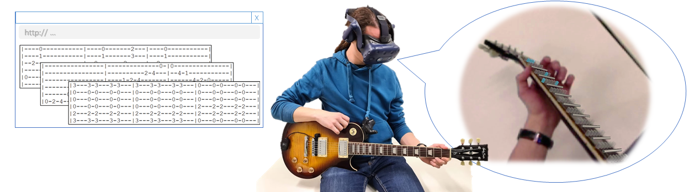
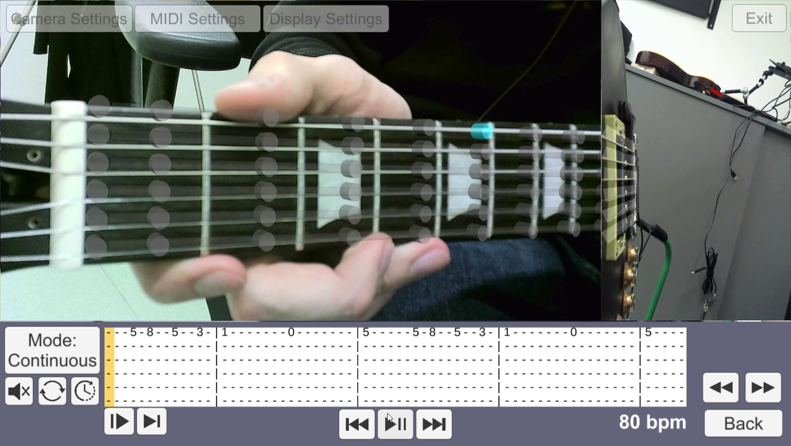

Abstract
We introduce a system capable of generating interactive Augmented Reality guitar tutorials by parsing common digital guitar tablature and by capturing the performance of an expert using a multi-camera array. Instructions are presented to the user in an Augmented Reality application using either an abstract visualization, a 3D virtual hand, or a 3D video. To support individual users at different skill levels the system provides full control of the playback of a tutorial, including its speed and looping behavior, while delivering live feedback on the user's performance.
Prototype
The focus of this work is to develop an application that guitar beginners can use to get familiar with guitar tablature and chords, by learning in an immersive environment as an alternative to following video tutorials. We designed a framework for guitar tutoring that is user-friendly and appealing to newcomers. Authoring lessons by parsing tablature is a fast and reliable way to generate learning content. Online tablature only requires slight modification to become compatible with our application, and once a lesson is ready, it is memory-effective and easily shareable.


When it comes to visualization, displaying lesson content by highlighting the frets is a precise method of conveying information, but requires additional perceptual effort by the user as it is an abstraction of the teacher's intent. The animated virtual hand better represents the intended action but lacks visual clarity due to potential self-occlusion. The alternative method of light field generation captures the teacher's intention exactly but requires more time to prepare.
Citation
@inproceedings{Skreinig2022ARHero,
author={Skreinig, Lucchas Ribeiro and Stanescu, Ana and Mori, Shohei and Heyen, Frank and Mohr, Peter and Sedlmair, Michael and Schmalstieg, Dieter and Kalkofen, Denis},
booktitle={IEEE Conference on Virtual Reality and 3D User Interfaces Abstracts and Workshops (VRW)},
title={AR Hero: Generating Interactive Augmented Reality Guitar Tutorials},
year={2022},
pages={395--401},
doi={10.1109/VRW55335.2022.00086}
}